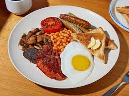

British Breakfast Recipe!

Learn how to make a delicouse English Breakfast.
Ingredients
- 2 slices of bread
-
Tin of beans
- butter
- some bacon
- Mushrooms
- sausages
- 2-3 eggs
- Tomatoes
Instructions
- First you have to chop the mushrooms and the tomatoes.
- Then you have to get a pan and warm it up just so that you can cook the eggs and bacon
- when the pan is warmed up, you can cook the eggs and bacon on the pan
- With a another pan, you can open the tin of beans and warm it up using the pan or just microwave it.
- using the same pans that you cooked the eggs and bacon, you can throw in the mushrooms and tmatoes in the pan for 2-3 minuits
- with the bread you can toast it and spread some butter on it
- Put all your food onto a plate and then your done
you can also have a side of orange juice and cofee with your Full English Breakfast